I assisted the bike shop renovation by adding a dedicated circuit for their outlets and lighting. The nearest/best panel was on the other side of a train bay... so it required some high up work.
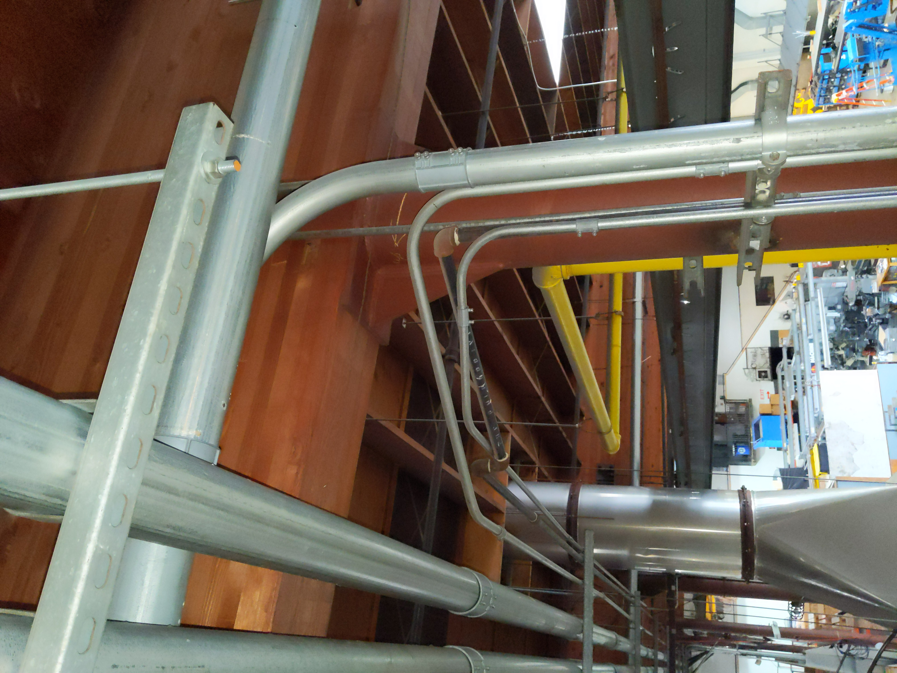 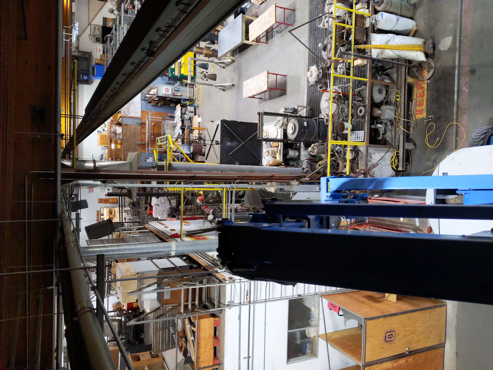 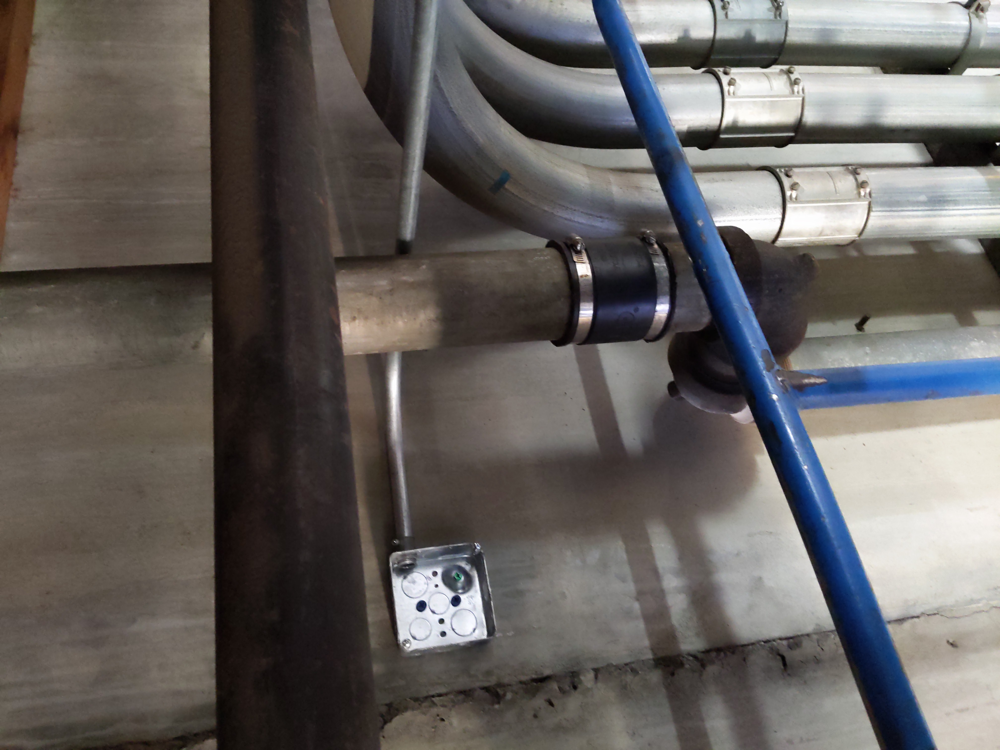 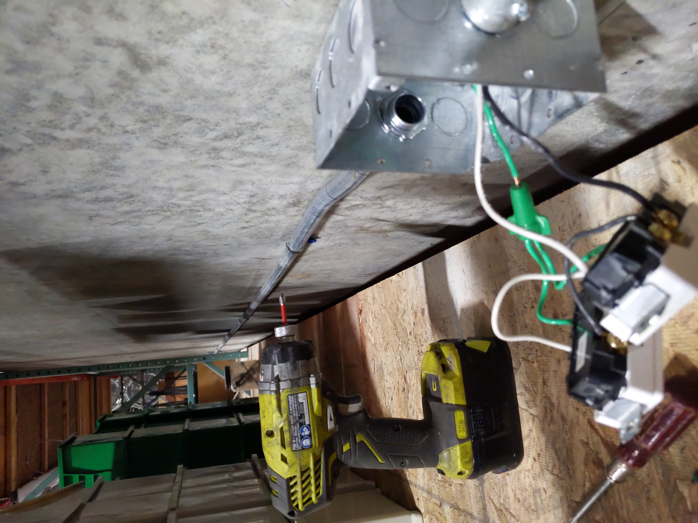 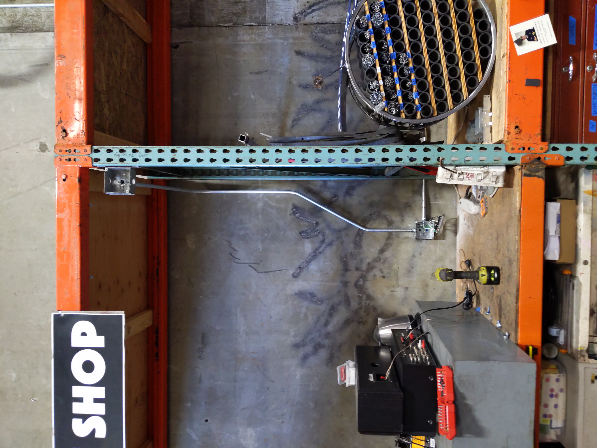 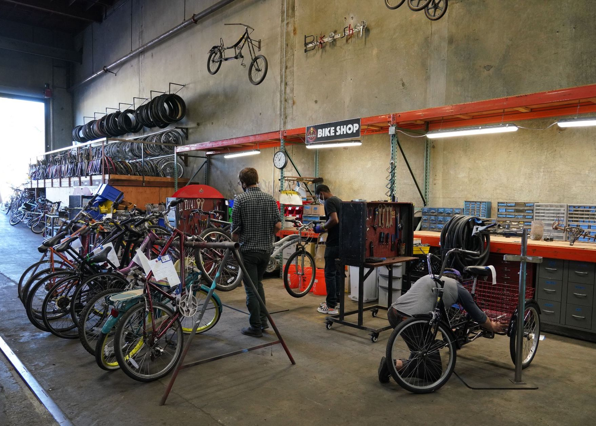This room got converted from a welding classroom into a woodturning room. I did the planning and worked with coworkers to redo the panel and run power to all of the tools in this shop, which included 6 lathes, 2 dust collectors, and some sanding machines. There is a write up on the project here: https://www.thecrucible.org/2021-expanded-wood-shop/
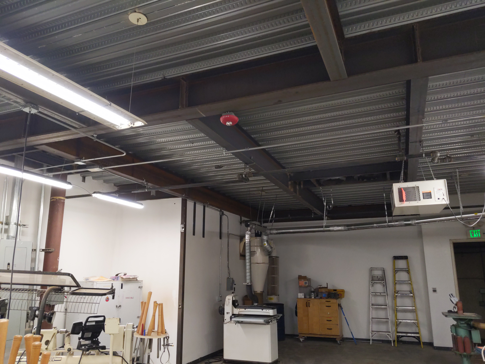 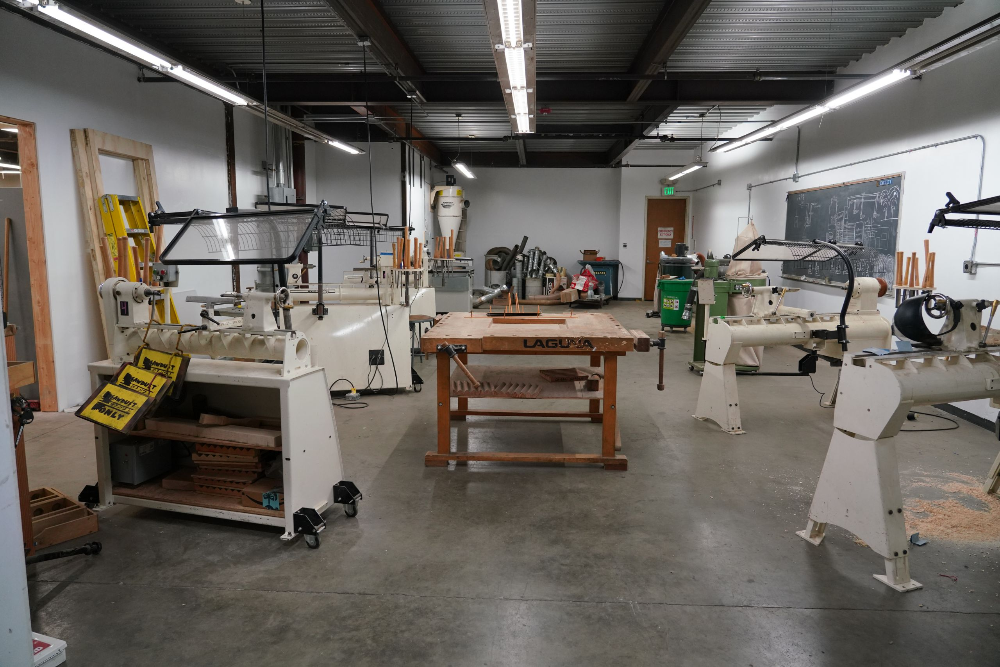More lighting/outlets.
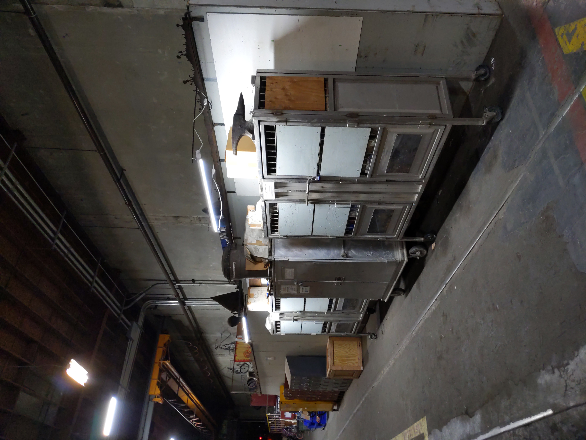 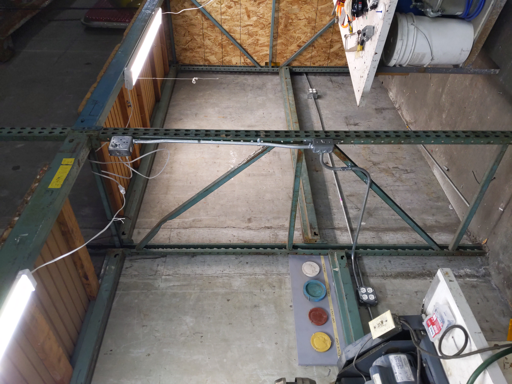Machine shop wanted to change out to brighter LED fixtures. The challenging part of this one was getting the old fixtures down in such a tight space.
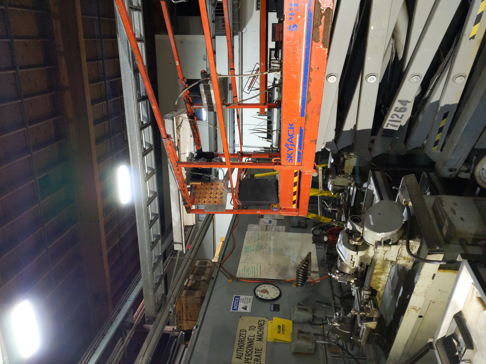 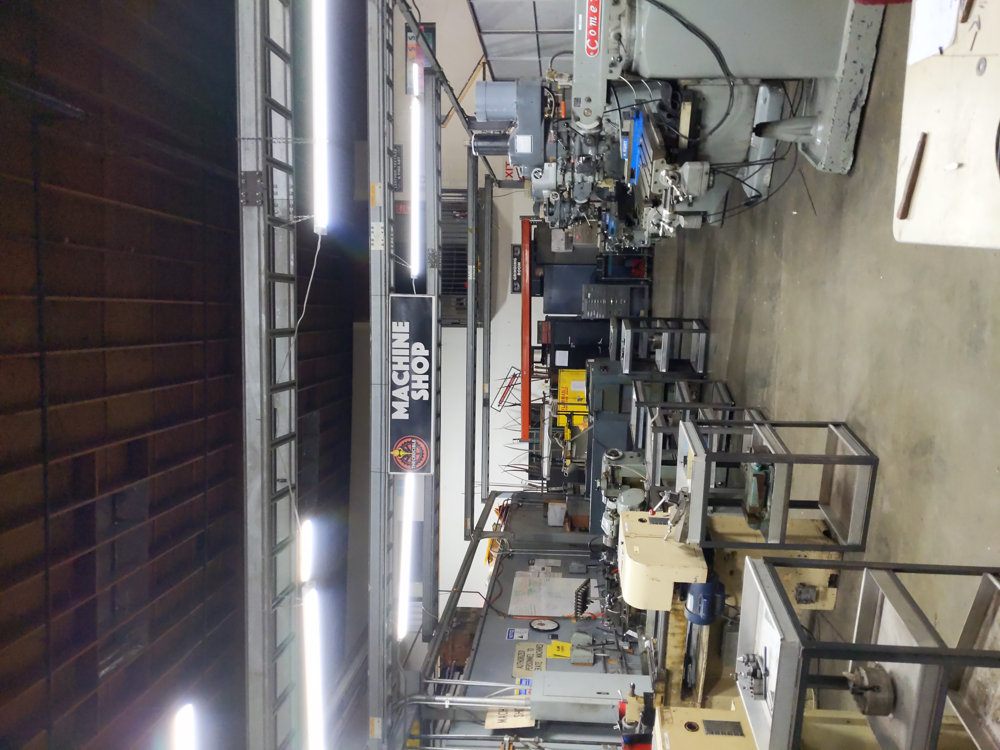This one we kept the old fluorescent light fixtures, but took out the ballasts for LED use.
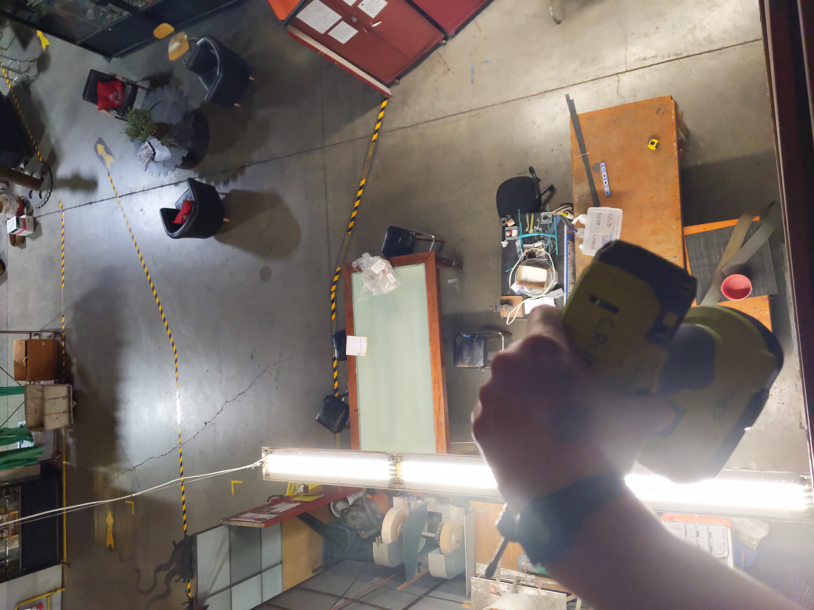